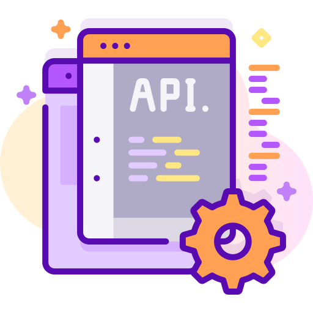

Automatize qualquer atividade ou processo de negócio repetitivo
Com a automação de processos é possível reduzir custos e aumentar a produtividade de qualquer atividade de negócio que seja repetitiva, escalável e com grande volume.
Logística Suprimentos Financeiro Recursos Humanos Administrativo Comercial Contabilidade Marketing Juridico Auditoria e muito mais...Benefícios
Maior produtividade
Os tempos de ciclos de processo são muito mais rápidos em comparação com abordagens manuais.

Confiabilidade
Os robôs trabalham 24/7, sem interrupções.
Tarefas de rotina são executadas sempre da mesma maneira e a todo momento.
Aumenta a satisfação dos colaboradores
Os colaboradores podem dedicar mais tempo para trabalhos criativos e estratégicos.
Baixo investimento
Utilizamos tecnologías open source e modelo simples de cobrança com tempo de desenvolvimento curto e retorno rápido.
Gerenie seus robôs
Monitore o desempenho dos robôs e gerencie o fluxo de trabalho e indicadores de desempenho em um painel administrativo.

Baixa barreira técnica
Tecnologia não-invasiva, sem interrupção para os sistemas legados, reduzindo a carga da TI.

Desenvolvemos robôs customizados que se adequam aos processos de negócio de cada
empresa e trabalham de forma integrada aos sistemas legados.